المصطلحات الأساسية والاتجاهات والوضعياتPractical Lecture 1: Basic Terms, Directions and Positions
عملي · م01 · 0.7 دقيقةأقسام المحاضرة (6)
مصطلحات عامةGeneral Terms
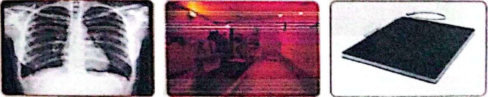


المصطلحات الاتجاهيةDirectional Terms

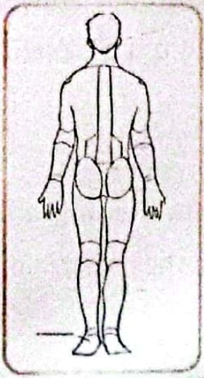

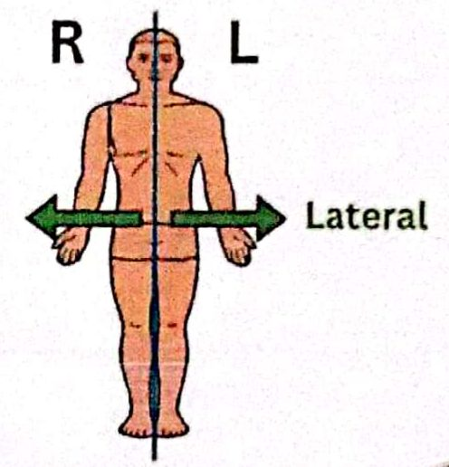
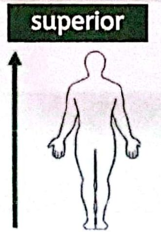
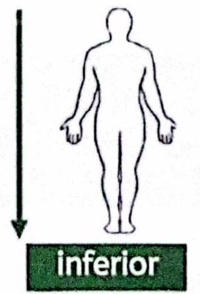

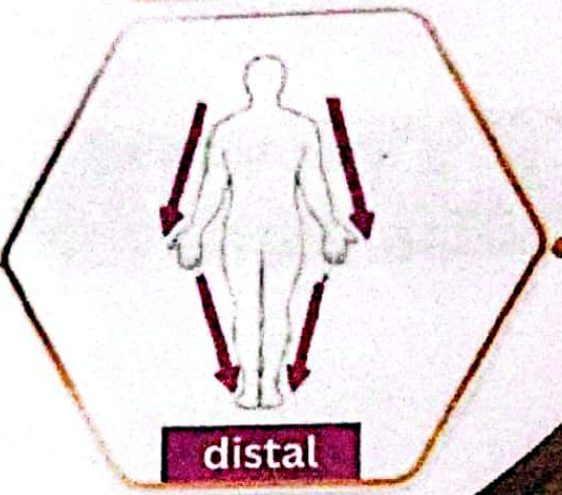
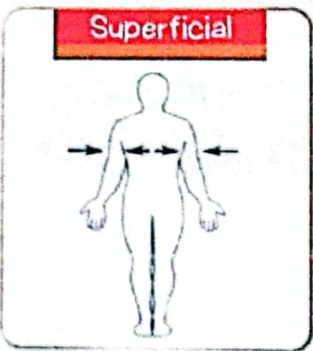


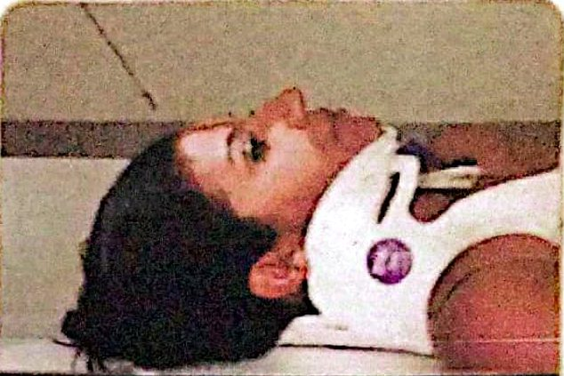
مراجعة: كل مصطلح وعكسهReview directional terminology
مستويات الجسمPlanes of the Body
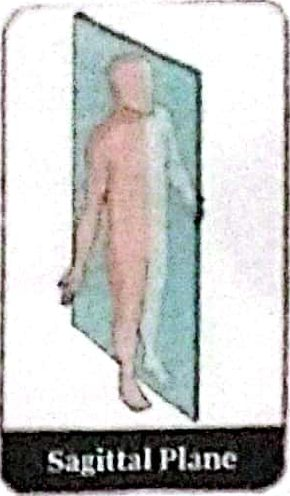


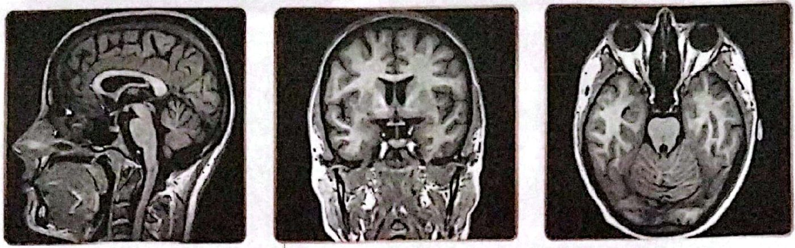
مصطلحات الإسقاط الشائعةCommon Projection Terms


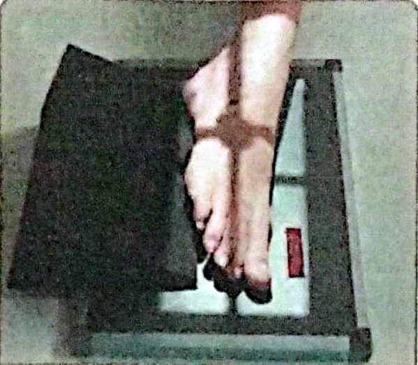
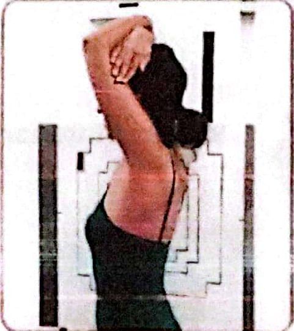
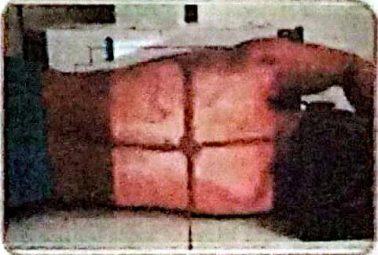
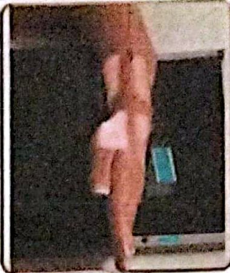
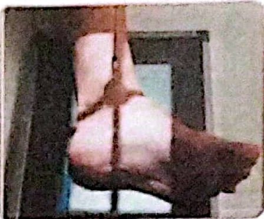
وضعيات الجسم العامةGeneral Body Positions
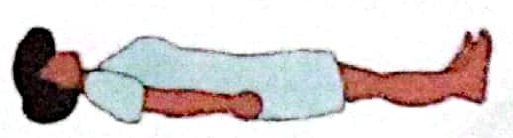
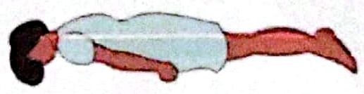
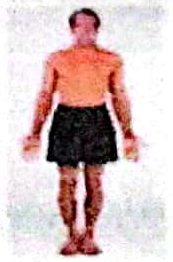
المصطلحات المتعلقة بالحركاتTerms Related to Movements


المحاضرة مسموعة
نص الأستاذ بالإنكليزي مثل الأصل · 0.7 دقيقة. اضغط أي جملة تسمعها، أو مصطلح منقّط تسمع لفظه ومعناه.
General Termsمصطلحات عامة
General Terms
Directional Termsالمصطلحات الاتجاهية
Directional Terms
Review directional terminology
Anterior, Posterior
Medial, Lateral
Superior, Inferior
Proximal, Distal
Superficial, Deep
Cephalic, Caudal
Planes of the Bodyمستويات الجسم
Planes of the Body
straight line surface connecting two point.
divides the body or an organ vertically into right and left sides.
divides the body into superior and inferior part.
divides the body into an anterior part and a posterior part.
Common Projection Termsمصطلحات الإسقاط الشائعة
Common Projection Terms
General Body Positionsوضعيات الجسم العامة
General Body Positions
Terms Related to Movementsالمصطلحات المتعلقة بالحركات
Terms Related to Movements
28 سؤال من نص المحاضرة، ويّا «ليش صح» بعد كل جواب.
ابدأ الاختباراضغط أي مصطلح منقّط تسمع لفظه ومعناه.
PDF ثنائي اللغة: نص الأستاذ + الترجمة + الخلاصة + الأسئلة · 1.9 MB
تحميل الملف